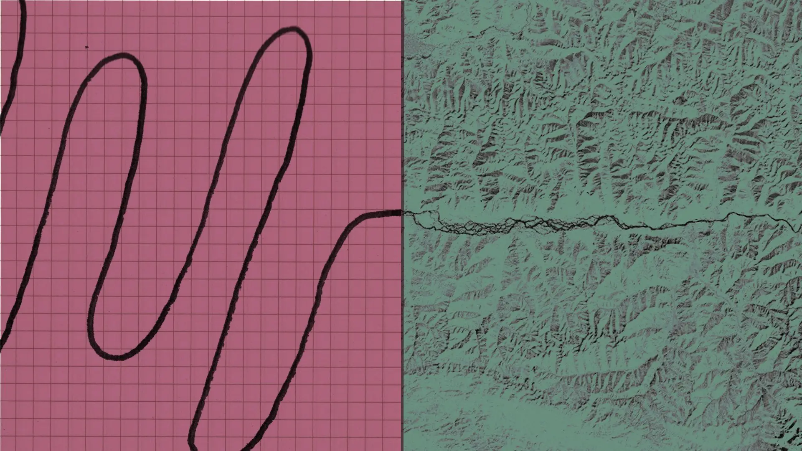
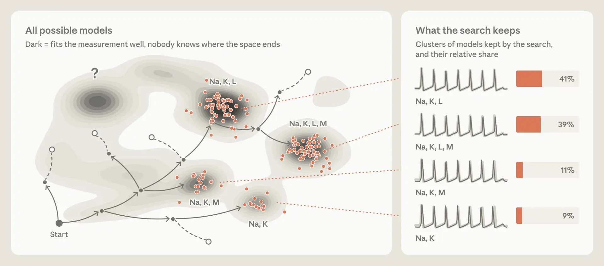
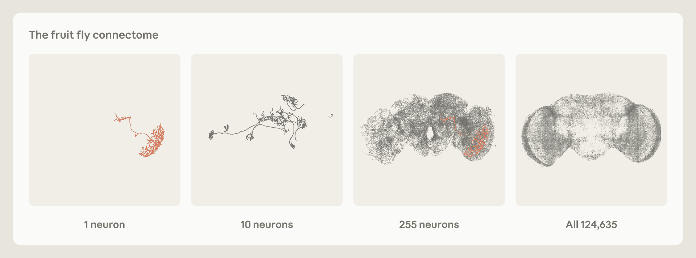

教 AI 构建科学模型
📖 中文摘要
专业术语注解
Hodgkin-Huxley模型：描述神经细胞动作电位的标准方程，以门控变量四次方拟合数据基于模拟的推断（SBI）：反复运行模拟器、训练神经网络从输出反推可能产生该输出的参数分布模拟器：输入参数即能产出预期数据的可运行模型，正向容易、反向求解常不可能贝叶斯推断：把所有说得通的参数组合以概率分布形式给出，兼顾拟合程度与先验知识模型分布：一组都能解释数据的候选模型，其共识特征与分歧点可指导下一次实验📄 中文全文
- 类别： 科学（Science）
- 来源： https://www.anthropic.com/research/teaching-ai-to-build-scientific-models
科学（Science） 2026 年 11 月 6 日

已发布 2026 年 11 月 6 日 团队 科学 主题AI for Science项目资助的Jakob Macke、Daniel Gedon与Stefan Wahl是ELLIS Institute Tübingen与图宾根大学的研究人员，他们在那里开发用于构建神经科学及其他领域科学模型的 AI 工具。在这篇客座文章中，他们讨论 AI 如何开始改变科学建模。 相关文章 * 科学 2026 年 11 月 4 日 用 Claude 研究穹窿体颗粒
阅读更多 1951 年，剑桥大学的计算机停机了六个月。这对生理学家 Andrew Huxley 很不方便——他和同事 Alan Hodgkin 刚建立起一组方程，用来描述某种鱿鱼神经细胞如何放电。两位科学家想弄清这些神经细胞的"动作电位"：它们用来传递信息的电脉冲，构成了大脑从感知到智能等一切活动的基础。要检验方程是否成立，唯一的办法是求解它们，再把解与数据比对。 Huxley 原本指望用那台新式的计算机来解方程。结果，他不得不用一台手摇机械计算器来解。这花了他三个多星期。 他们模型的基本结构由关于该细胞的已知事实决定。Hodgkin 与 Huxley 把细胞膜建模成一个电路。然而，模型有一部分只是有根据的猜测。为了让曲线拟合他们测得的数据，他们发现必须把某个变量取四次方——也就是让它自乘三次。当时他们并不知道原因，只知道若不如此，模型对观测数据的预测就没那么好。 不过，他们确实提出了一个假说。他们谨慎地推测：这个决定细胞膜上特定门控如何开启的变量之所以需要四次方，或许是因为在门开启之前，膜中必须有多个带电粒子各就各位。 数十年后，早在 Hodgkin 与 Huxley 于 1963 年共同获得诺贝尔生理学或医学奖很久之后，另一支团队解析出了一种相关钾通道蛋白的结构。他们发现，没错，它确实由四个相同的部件围绕一个中央孔道排列而成。这个模型在 1951 年是拟合数据得到的。即便在当时，它已能相对准确地预测冲动传导的速度。不止如此，它后来还被证明帮助预测了钾离子通道本身的结构——而它从未针对那方面做过拟合。 如今，一个 AI 系统大概能在一个下午就找到类似 Hodgkin 与 Huxley 的方程，甚至可能把实验数据拟合得更贴近。但这个故事的要点在于：仅仅知道四次方管用并不够；真正要紧的是知道模型的简化版本行不通。一个只把模型递给你的 AI 系统也许给了你一个答案，却没有给你理解。用模型复现数据是不够的，因为任意多个模型都能做到同样的事。要紧的是能够对现实世界系统本身作出断言，理想情况下还能对其他类似系统作出断言。为此，你需要知道该模型与那些奏效的其他模型共享哪些特征，又有哪些特征使它区别于那些不奏效的模型。正如数学家 Richard Hamming 在 1962 年所写："计算的目的是洞见，不是数字。"
三步走的路线
七十多年过去，Hodgkin-Huxley 模型仍是神经元电活动的标准描述。同一类方程，只是常数不同，就能描述从鱿鱼到人类整个动物界的神经细胞——尽管我们的演化谱系在五亿多年前就已分开。 然而，比它长寿更重要的是，Hodgkin-Huxley 模型揭示了模型是如何运作的。Hodgkin 与 Huxley 的方法可拆为三步，而大多数科学建模都涉及它们的某种变体。 * 第一步是构建模型。这意味着决定模型由什么组成、其方程取什么形式。在 Hodgkin 与 Huxley 的例子里，那就是电路的各个部件——膜与门控——以及方程的形式，例如把基础变量取四次方。 * 第二步是约束模型——调整其可调参数以拟合真实测量。对 Hodgkin 与 Huxley 而言，这包括诸如门控在不同电压下多久开启一次之类的设定。 * 第三步是解读模型——追问模型对真实系统说了什么，例如提出四次方意味着门控有四个可动部件。
在实践中，科学家会反复经历这些步骤。如果数字拟合不上测量值，或解读说不通，他们就折回去修改。 这三步过去都由人完成，但 AI 系统正越来越多地参与其中。可以说，机器在约束模型上进展最大，所以我们从这里讲起。
分摊账单，或如何约束模型
当 Hodgkin 与 Huxley 靠眼力和直觉约束模型时，他们最终只得到一组数字。这告诉他们模型_能够_匹配数据，却没有告诉他们另一组数字是否也能同样奏效、甚至更好。 想象一下，你知道一顿聚餐总共花了 120 美元，却不知道谁点了什么。许多种不同的点单组合都可能凑出这个数——也许人人都点了价格中等的汉堡，也许有一个人点了牛排和龙虾，而其他人只喝了汤。神经细胞模型遵循同样的原理：不同的门控参数组合可以产生近乎相同的电活动。只展示一组拟合良好的组合，就把其他所有说得通的参数设置都藏了起来，而那些组合本可能导向不同的预测。几乎任何被建模的现象都是如此。许多组不同的参数都能同样好地解释观测数据。 约束 Hodgkin-Huxley 模型的示意图。(1) 来自神经细胞的一次测量。(2) 对钾、钠通道设定的每一种组合，该测量出现的可能性有多大；颜色越深表示拟合越好；蓝点可交互。(3) 模型在三种设定下的模拟，与测量值（灰色）对比；有些拟合良好，有些则不然。 解决办法是一种叫贝叶斯推断（Bayesian inference）的统计方法。它把所有还算说得通的数字组合都交给你，形式是一个概率分布，既考虑它们与数据的拟合程度，也考虑你对参数的先验知识。这个分布呈一条曲线，拟合最好的在峰值，较弱的在边缘。 但对复杂模型而言，这种方法通常不切实际，因为它需要计算：在每一组可能的数字下，你的测量值出现的可能性有多大。在 Hodgkin 与 Huxley 的模型里这还勉强可行，但凡再复杂一些，计算上就不可能了。例如，如果数千个离子通道各自随机开合，你就得穷举每一种组合。回到餐费的类比：回答"如果 A 点了汉堡、B 点了牛排，账单会是多少？"很容易，但要说明哪些组合能凑出最终账单就难得多，尤其当人数和菜单选项不断增加时。 另一种叫基于模拟的推断（simulation-based inference，SBI）的方法，用纯算力绕开了这个逆向求解难题。你随机挑一组参数，跑一遍模型，记下输出；一遍又一遍地重复——对 Hodgkin-Huxley 这样的模型也许要 100,000 次，对更大、更复杂的模型则要数百万次。然后在这些结果上训练一个神经网络，使得给定一个输出，它就能返回可能产生该输出的参数范围。 SBI 唯一的要求是你能运行模型：输入一组参数，拿回你预期会看到的那类数据。一个可以这样运行的模型——参数进、数据出——就叫_模拟器_（simulator），"基于模拟的推断"由此得名。你根本不需要用公式去计算测量值出现的可能性，而正是这一步让标准贝叶斯推断常常不切实际。如今模拟器通常是计算机程序，但未必非得如此：Huxley 用手摇计算器一步步解方程，本身就在运行一个模拟器。许多模拟器正向运行容易，反向求解却不可能。有些甚至写不成一个利落的方程——它们的假设内嵌在所遵循的规则里——但它们依然是模型。对许多复杂现象，从神经元网络到相撞的星系，模拟器往往是我们唯一拥有的模型。SBI 让我们能用数据去约束这类模型。 跑完所有这些模拟开销不菲，可能要花上几周。但一旦完成，训练好的网络能在几秒内对新数据做推断，无需再跑模拟。这种速度改变了可能性的边界。当两颗中子星相撞时，SBI 能大致算出碰撞发生在天空的哪个方位，快到足以在信号仍可探测时把望远镜对准它。同样的方法已被成功应用于宇宙学、结构生物学、地球物理学以及许多其他领域的问题。 SBI 也已被用于神经细胞模型，包括 Hodgkin-Huxley 模型。由于它返回的是一个分布而非单一拟合，我们能看出哪些参数被数据很好地约束、哪里存在不止一种说得通的解释、以及哪里最需要更多数据——因而最需要再做一次实验。
账单再上一层，或如何构建模型
要约束一个模型，先得有一个可约束的模型。Hodgkin-Huxley 模型的方程并非从第一性原理推导而来。相反，基础变量的四次方是_经验性地_从科学家的生物学洞见、以及从发现简化版本不那么奏效中浮现出来的。
在科学史的大部分时间里，模型都是这样建起来的：科学家凭专业知识和假设写下一个候选模型，然后检验它、修改它、再试一次。问题在于，可能模型的空间本质上是无限的，而一位凭经验提出寥寥几个模型的科学家，极可能漏掉那些本可同样好地解释观测数据的模型。
如今，AI 系统已经能协助、甚至接管这一步。给定一些数据和对某个系统的自然语言描述，一个基于 LLM 的智能体会为一个或一组候选模型写出代码。随后它运行模型、约束参数、把输出与现实数据比对，并修改它——也许是通过改动某个方程的形式。这个循环不断重复，直到模型足够准确地复现数据。过去两年已出现若干这样的系统。1 细节各有不同，但都用 LLM 来设计模型本身。直到不久前，人们还认为这只有人类才做得到。
但模型能复现数据，并不等于它提供了洞见。与餐费或 Hodgkin-Huxley 参数一样，在单一模型内部，许多组不同的参数都能给出同样的输出。再往上一层，对模型本身也是如此：许多不同的_模型_，方程形状各异，却都能同样好地解释同一份数据。把同一个智能体在同一份数据上跑两次，它可能返回两个不同、却同样好的模型。只返回其中一个的智能体，就把其余的藏了起来，正如一组单一的最佳拟合数字所做的那样。
 通过在所有模型的空间中搜索来构建模型。左：每个点是 Hodgkin-Huxley 模型的一个可能变体；背景越深表示模型越可能。我们既保留可能的、也保留不太可能的模型，因为所有模型都可能带来洞见。右：AI 系统从各簇构建出的模型的模拟，以及各簇占全部模型的份额。
因此，更好的做法是把构建模型与约束模型一视同仁：你要的是能说得通地解释数据的整个模型范围。2 AI 系统提出许多候选，每一个再按数据对它的支持程度加权；那些需要很大灵活性才拟合得上的，得分低于自然拟合的。较弱的候选被淘汰，AI 系统再围绕较强的候选提出新的变体。
这样一来，AI 智能体能给出一组说得通的模型分布，而非单一最佳拟合；这个分布能告诉你单一模型告诉不了的事。如果所有留下来的模型都共享某个特征，数据很可能支持它。如果幸存者彼此分歧，那就说明哪里证据薄弱，并为研究者指出下一次实验的方向。
我们不应操之过急。到目前为止，这些系统大多只在"重新发现科学家已知的模型"上受过检验。至于它们能处理_没有_已知答案的问题，证据还很稀少。不过，较新的 LLM 在研究任务上表现更好，我们预期这些系统会持续改进。
通过在所有模型的空间中搜索来构建模型。左：每个点是 Hodgkin-Huxley 模型的一个可能变体；背景越深表示模型越可能。我们既保留可能的、也保留不太可能的模型，因为所有模型都可能带来洞见。右：AI 系统从各簇构建出的模型的模拟，以及各簇占全部模型的份额。
因此，更好的做法是把构建模型与约束模型一视同仁：你要的是能说得通地解释数据的整个模型范围。2 AI 系统提出许多候选，每一个再按数据对它的支持程度加权；那些需要很大灵活性才拟合得上的，得分低于自然拟合的。较弱的候选被淘汰，AI 系统再围绕较强的候选提出新的变体。
这样一来，AI 智能体能给出一组说得通的模型分布，而非单一最佳拟合；这个分布能告诉你单一模型告诉不了的事。如果所有留下来的模型都共享某个特征，数据很可能支持它。如果幸存者彼此分歧，那就说明哪里证据薄弱，并为研究者指出下一次实验的方向。
我们不应操之过急。到目前为止，这些系统大多只在"重新发现科学家已知的模型"上受过检验。至于它们能处理_没有_已知答案的问题，证据还很稀少。不过，较新的 LLM 在研究任务上表现更好，我们预期这些系统会持续改进。
翻译中的遗失，或如何解读模型
模型一旦构建并约束完毕，仍须加以解读。它对我们所研究的真实系统说了什么？Hodgkin 与 Huxley 的四粒子假说之所以产生，是因为：若门开启之前必须有四件彼此独立的事全部发生，你会预期方程里出现四次方。于是他们提出，膜内发生的或许正是这样一回事。如上文所见，后来证明他们大体是对的。 这一解读之所以有分量，全因为他们排除了什么。如果一个更简单的模型也能同样奏效，就没有理由认为门控有多个可动部件。正是对照方案纷纷失败，才使他们能够作出那个断言。确切数目仍有些不确定：Hodgkin 与 Huxley 指出需要三次方或四次方，最后选定了四。他们写道，更高的幂甚至可能拟合得略好，但那点潜在的"改进被认为不值得付出额外的复杂性"。 这些方程还让 Hodgkin 与 Huxley 推演出若干其他含义。例如，方程解释了为什么神经细胞有一个电压阈值——低于它不放电、高于它就放电，以及为什么神经脉冲的形状全都一样。它们还预言，上升得足够缓慢的电流永远不会让细胞放电。科学哲学家把一种理论称为"可理解的"，如果它让你无需运行就能推出其后果。对只有寥寥几个变量的模型（如 Hodgkin-Huxley），这个检验成立。对也许有数千个变量的更大模型，等价的检验可能是：我们能否把它浓缩为几条足以重建它的关键机制性思路。模型越大，这越难。 三步之中，解读是最难交给 AI 的。目标更难界定：我们能衡量模型对数据拟合得多好，却无法衡量它是否带来对系统更好的理解，而且也不清楚该如何告诉一个 AI 系统把"理解"当作目标。一种提议是，通过观察 AI 系统在扰动某个系统时能否准确预测该系统会怎样，来评判它的理解。另一种则干脆绕开这个问题，转而追问智能体的输出是否帮助人类科学家更好地理解问题。一个例子是用于设计量子实验的 AI 系统。它并不提供单一套装置，而是被训练成写出一段短程序，为整整一族相关实验生成各种装置。物理学家于是可以直接从程序里读出底层的设计原理，而不必从一套实验装置中反向推演出来。 在这两种路径里，能拿到合用模型的完整分布、而非单一最佳拟合模型，对解读都至关重要。单一模型无法告诉我们它的哪些部分其实被数据约束，于是很容易把意义读进那些并未被约束的部分。在 Hodgkin-Huxley 中，如前所述，四粒子假说只有在你知道更低次幂不那么奏效时才讲得通。一组模型还能让预测更稳健。假设你问自己的模型：扰动某个系统会发生什么——例如阻断细胞膜上全部、或仅部分钠门控。如果所有拟合数据的模型都给出同一答案（就像所有门控都被阻断时你会预期的那样），你就能对它相当有把握；如果它们分歧（就像只阻断部分门控时可能出现的那样），那便能为下一次实验提供思路。
细胞与尺度
大多数著名的模型，包括 Hodgkin-Huxley 在内，都很紧凑。它们由寥寥几个变量和方程组成，小到一位人类科学家可以写下来、并据此推理。这并非巧合：它们必须紧凑，因为要由人来构建、约束和解读。也正因小巧，它们才可理解。但随着 AI 接手越来越多的工作，规模限制会开始松动。我们可以开始为那些复杂到无法手写下来的系统建模，即便我们再也不能单靠读方程就理解它们。
大脑是一个显而易见的应用场景。Hodgkin-Huxley 方程描述的是单个神经细胞，但果蝇的大脑含有超过 100,000 个，人脑则有数百亿个。而正是这些神经元之间的相互作用，催生了行为与思想。对果蝇，我们如今拥有前几代科学家不可能拥有的东西：一幅完整的大脑接线图，标出每一个神经元以及它与其他神经元的连接方式。3 研究者已开始在它之上构建大规模模型，其中一个能预测果蝇视觉系统中各神经元的活动。这开启了从前没人能合理提出的问题：一整个大脑如何把接线转化为行为？仅凭接线，能预测动物行为的多少？又有哪些连接真正要紧？
但在这样的尺度上，不可能找到一个唯一正确的模型。事实上，多数情况下根本不存在这样的东西。正如统计学家 George Box 所写："所有模型都是错的，但有些有用。"数据永远会与许多模型相容。问题将不再是哪个模型是对的，而是所有与数据相容的模型共享哪些性质、以及能从中推出哪些预测。最有用的实验，将是那些能排除最多剩余模型的实验——即便它们未必总是人类科学家觉得最有趣的那些。
 从单个神经元扩展到整颗大脑。果蝇大脑依其接线图绘制，分别展示 1、10、255 个神经元，以及全部 124,635 个细胞。渲染自male CNS connectome（HHMI Janelia、剑桥大学、MRC LMB 与 Google Research），CC BY 4.0。
这并非神经科学独有。气候科学家早就这样做：他们构建许多庞大的数值模拟，每一个都基于略有不同的假设，再把预测结果报告为所有模拟之间的分布范围。大型强子对撞机的粒子物理学家也秉持类似精神：寻找新粒子时，他们并不只是宣布某个特定理论成立与否；而是给出一幅图谱，标明该理论的哪些版本被数据排除、哪些仍然开放。
Hodgkin 与 Huxley 所做的那番苦功——构建模型、靠眼力拟合每条曲线、试过那些拟合不上的幂次，以及就 Huxley 而言花三个星期手摇机械计算器——并不是我们想重回的过去。但它并未白费。模型提供的洞见，很大一部分来自创造它的过程；Hodgkin 与 Huxley 之所以明白模型在告诉他们什么，是因为他们亲手构建了它，也知道哪些做法行不通。正是这份理解，让他们得以提出对门控变量的解读——那项发现最终为他们赢得诺贝尔奖的一部分。
如今，一个 AI 系统大概能在一个下午完成其中很大一部分工作。但要提供理解，它需要交出两位科学家慢工细活所产出的东西：不只是拟合好的模型，还要说明哪些部分被数据钉死、哪些仍然开放、哪些备选方案在途中失败、以及过程中又揭开了什么新谜题。科学模型可以给出一个答案，但提供洞见的是构建它的过程。
从单个神经元扩展到整颗大脑。果蝇大脑依其接线图绘制，分别展示 1、10、255 个神经元，以及全部 124,635 个细胞。渲染自male CNS connectome（HHMI Janelia、剑桥大学、MRC LMB 与 Google Research），CC BY 4.0。
这并非神经科学独有。气候科学家早就这样做：他们构建许多庞大的数值模拟，每一个都基于略有不同的假设，再把预测结果报告为所有模拟之间的分布范围。大型强子对撞机的粒子物理学家也秉持类似精神：寻找新粒子时，他们并不只是宣布某个特定理论成立与否；而是给出一幅图谱，标明该理论的哪些版本被数据排除、哪些仍然开放。
Hodgkin 与 Huxley 所做的那番苦功——构建模型、靠眼力拟合每条曲线、试过那些拟合不上的幂次，以及就 Huxley 而言花三个星期手摇机械计算器——并不是我们想重回的过去。但它并未白费。模型提供的洞见，很大一部分来自创造它的过程；Hodgkin 与 Huxley 之所以明白模型在告诉他们什么，是因为他们亲手构建了它，也知道哪些做法行不通。正是这份理解，让他们得以提出对门控变量的解读——那项发现最终为他们赢得诺贝尔奖的一部分。
如今，一个 AI 系统大概能在一个下午完成其中很大一部分工作。但要提供理解，它需要交出两位科学家慢工细活所产出的东西：不只是拟合好的模型，还要说明哪些部分被数据钉死、哪些仍然开放、哪些备选方案在途中失败、以及过程中又揭开了什么新谜题。科学模型可以给出一个答案，但提供洞见的是构建它的过程。
脚注
01 例如可参见以下研究：Romera-Paredes et al., 2024；另参见 Shojaee et al., 2025；另参见 Ma et al., 2024；另参见 Novikov et al., 2025；另参见 Xia et al., 2026；以及 Ziaei Bideh and Gryak, 2026 等工作。 02 可参见 Wahl et al., 2026；另参见 Mishra-Sharma, 2026；以及 Murphy, 2026 等研究。 03 可参见 Dorkenwald et al., 2024；另参见 Schlegel et al., 2024；以及 Azevedo et al., 2024 等研究。
作者与致谢
贡献者
Jakob Macke, Daniel Gedon, and Stefan Wahl
致谢
我们感谢 Xander Balwit、Tom Chivers 与 Siddharth Mishra-Sharma 在审阅与编辑指导方面的帮助。
▸ 英文原文（点击展开）
Teaching AI to build scientific models
- Date: 2026-11-06
- Source: https://www.anthropic.com/research/teaching-ai-to-build-scientific-models
Teaching AI to build scientific models
Published Nov 6, 2026 Team Science Topics
AI for Science grantees Jakob Macke, Daniel Gedon, and Stefan Wahl are researchers at the ELLIS Institute Tübingen and the University of Tübingen, where they build AI tools for developing scientific models in neuroscience and beyond. In this guest post, they discuss how AI is starting to change scientific modeling. Related articles * Science Nov 4, 2026 Investigating vault particles with Claude
View more In 1951, Cambridge University’s computer went out of action for six months. This was inconvenient for physiologist Andrew Huxley, who, alongside his colleague Alan Hodgkin, had just built a set of equations to describe how a particular squid nerve cell fired. The scientists wanted to understand the “action potential” of these nerve cells: the electrical pulses they use to communicate, which underlie everything brains do, from perception to intelligence. The only way to find out whether the equations worked was to solve them and compare the solutions to data. Huxley had hoped to use the newfangled computer to solve the equations. Instead, he was forced to solve them using a hand-cranked mechanical calculator. It took him over three weeks. The basic structure of their model was dictated by known facts about the cell. Hodgkin and Huxley modeled its membrane as an electrical circuit. One part of the model, however, was just an educated guess. In order to make the curve fit the data they had measured, they found that they had to raise one variable to the fourth power—that is, to multiply it by itself three times. At the time, they did not know why. They just knew that otherwise the model didn’t predict the observed data as well. They did offer a hypothesis, however. They cautiously suggested that the variable in question, which governed how particular gates in the cell membrane opened, might require the fourth power because multiple charged particles in the membrane had to move into place before the gate would open. Decades later, long after both Hodgkin and Huxley had won the Nobel Prize in Physiology or Medicine in 1963, another team found the structure of a related potassium channel protein. And they discovered that, yes, it had four identical pieces arranged around a central pore. The model was fit to the data in 1951. Even then, it predicted how fast the impulse travels relatively accurately. More than that, it turned out to have helped predict the structure of potassium ion channels themselves, which it had never been fit to. Today, an AI system could plausibly find an equation like Hodgkin and Huxley’s in an afternoon, and perhaps it would fit the experimental data even more closely. But the point of the story is that simply knowing the fourth power did the job was not enough; what mattered was knowing that a simpler version of the model did not work. An AI system that merely hands you the model might give you an answer, but it does not give you understanding. Reproducing the data with a model is insufficient, because any number of models could do the same. What matters is being able to make claims about the real-world system itself, and ideally about other, similar systems. To do so, you need to know which features the model shares with other models that work, and which set it apart from models that don’t. As the mathematician Richard Hamming wrote in 1962, “The purpose of computing is insight, not numbers.”
A three-step program
More than 70 years on, the Hodgkin-Huxley model remains the standard description of electrical activity in neurons. The same kinds of equations, with different constants, describe nerve cells across the animal kingdom, from squids to humans, even though our evolutionary lineages separated more than half a billion years ago. Even more important than its longevity, however, is what the Hodgkin-Huxley model tells us about how models work. Hodgkin and Huxley’s approach can be broken down into three steps, and most scientific modeling involves some version of them. * The first is building the model. This means deciding what the model is made of and what shape its equations take. In Hodgkin and Huxley’s case, that meant the parts of the electrical circuit—the membrane and the gates—and the form of the equations, such as raising the underlying variable to the fourth power. * The second is constraining the model—tuning its adjustable parameters to fit real measurements. For Hodgkin and Huxley, that included settings like how often the gates open under different voltages. * The third is interpreting the model—asking what the model says about the real system, such as suggesting that the fourth power meant the gate had four moving parts.
In practice, scientists go through these steps repeatedly. If the numbers fail to fit the measurements, or if the interpretation makes no sense, they go back and revise. All three steps were once done by people, but AI systems are increasingly involved in each of them. Machines have arguably made the most progress in constraining models, so we’ll start there.
Splitting the bill, or how to constrain models
When Hodgkin and Huxley constrained their model by eye and intuition, they ended up with a single set of numbers. This told them that the model could match the data. It didn’t tell them whether other numbers would have worked just as well or even better. Imagine you know that a group dinner added up to $120, but not who ordered what. Many different combinations of orders could have added up to that amount—perhaps everyone ordered a mid-priced burger, or perhaps one person had steak and lobster while everyone else had soup. Models of nerve cells work on the same principle: different combinations of gate parameters can produce near-identical electrical activity. Simply showing one combination that fits well hides all the other plausible parameter settings, and other combinations might have led to different predictions. This is true of almost any phenomenon being modeled. Many different sets of parameters can explain the observed data equally well. An illustration of constraining the Hodgkin-Huxley model. (1) A measurement from a nerve cell. (2) How likely the measurement is for each combination of potassium and sodium channel settings. Darker means a better fit. The blue dot is interactive. (3) Simulations of the model at three settings, compared to the measurement (gray). Some fit well, while others do not. The solution is a statistical method called Bayesian inference. It gives you every set of numbers that works reasonably well, as a probability distribution that takes into account their fit to the data and your prior knowledge about the parameters. The distribution takes the shape of a curve, with the best fits at the peak and the weaker ones at the fringes. But this method has usually been impractical for complex models, because it involves calculating how likely your measurements would be under every possible set of numbers. In Hodgkin and Huxley’s model, that would still be feasible, but for anything more complicated, it would be computationally impossible. For example, if each of the thousands of ion channels opens and closes at random, you would have to work out every combination. Returning to our restaurant bill analogy: it would be easy to answer, “If person A had the burger and person B had the steak, what would the bill come to?” but much harder to show which combinations could have led to the final bill, especially as the number of people and menu options grows. A different approach called simulation-based inference (SBI) overcomes this reverse-engineering problem with sheer computation. You pick random parameters, run the model, and record the output. You do it again and again—perhaps 100,000 times for a model like Hodgkin-Huxley, and millions of times for larger, more complex ones. Then you train a neural network on the results so that, given an output, it can return the range of parameters that could have produced it. All SBI requires is that you can run the model: put in a set of parameters and get back the kind of data you would expect to see. A model you can run like this—parameters in, data out—is called a simulator , hence the name “simulation-based inference.” You never need to use a formula to calculate how likely your measurements are, which is the step that makes standard Bayesian inference often impractical. These days a simulator is usually a computer program, but it doesn’t have to be: Huxley, cranking through the equations by hand, was running one. Many simulators are easy to run forward but impossible to reverse. Some can’t even be written out as a tidy equation—their assumptions are built into the rules they follow—but they are models nonetheless. For many complex phenomena, from networks of neurons to colliding galaxies, simulators are often the only kind of model we have. SBI lets us constrain those models with data. Running all those simulations is expensive and can take weeks. But once it is done, a trained network can perform inference on new data in seconds, without requiring further simulations. That speed has changed what’s possible. When two neutron stars collide, SBI can work out roughly where in the sky the collision happened, fast enough to point telescopes at it while the signal is still detectable. The same approach has been successfully applied to problems in cosmology, structural biology, geophysics, and many other domains. And SBI has been applied to nerve cell models, including the Hodgkin-Huxley model. Because it returns a distribution rather than a single fit, we can see which parameters are well constrained by the data, where more than one explanation is plausible, and where more data—and thus another experiment—is most needed.
The bill, one level up, or how to build models
Before you can constrain a model, you need a model to constrain. The equations of the Hodgkin-Huxley model were not derived from first principles. Instead, the fourth power of the underlying variable emerged empirically from the scientists’ biological insight, and from finding that simpler versions didn’t work as well. For most of the history of science, this is how models have been built. Scientists used their expertise and assumptions to write down a candidate model. Then they tested it, revised it, and tried again. The problem is that the space of possible models is essentially infinite, and a scientist proposing a handful of models from experience will very likely miss models that could have explained the observational data equally well. AI systems can now help with, or even take over, this step. Given some data and a natural-language description of a system, an LLM-based agent writes code for a candidate model or a set of candidate models. Then it runs the model, constrains its parameters, compares the output to real-world data, and revises it, perhaps by modifying the form of an equation. This loop repeats until the model replicates the data accurately enough. Several such systems have appeared in the past two years.1 The details vary, but all use an LLM to design the model itself. Until recently, this was thought to be something only humans could do. But the fact that a model replicates data doesn’t mean that it provides insight. As with the restaurant bill, or the Hodgkin-Huxley parameters, many different combinations of parameters within a single model can provide the same output. The same is true one level up, for the model itself: many different models , with differently shaped equations, can explain the same data equally well. Run an agent twice on the same data, and it might return two different, and equally good, models. An agent that returns only one of them is hiding the rest, just as a single best-fit set of numbers does.

Building models by searching the space of all models. Left: Each dot is a possible variant of the Hodgkin-Huxley model; a darker background indicates models that are more likely. We keep both likely and unlikely models, as all models can carry insight. Right: Simulations of models built by AI systems from each cluster, and each cluster’s share of all models. So it is better to treat building a model the same way we treat constraining one: you ask for the whole range of models that could plausibly explain the data.2 The AI system proposes many candidates. Each is then weighted by how much it is supported by the data, and the ones that need a lot of flexibility to fit are given less credit than those that fit naturally. The weak candidates drop out, and the AI system proposes new variations on the stronger ones. AI agents can thus provide a distribution of plausible models, rather than a single best fit, and that distribution tells you things a single model can’t. If every surviving model shares a feature, the data likely favors it. If the survivors disagree, that shows where the evidence is thin, and points researchers in the direction of the next experiment. We shouldn’t get too far ahead of ourselves. So far, these systems have mostly been tested on rediscovering models that scientists already know. Evidence that they work on problems with no known answer is sparse. Still, newer LLMs perform better at research tasks than older ones, and we expect these systems to keep improving.Lost in translation, or how to interpret models
Once a model has been built and constrained, it still has to be interpreted. What does it tell us about the real system being studied? Hodgkin and Huxley’s four-particle hypothesis came about because equations involving the fourth power are what you would expect if four separate things all had to happen before a gate could open. So they suggested that this might be what was happening inside the membrane. As we saw above, they turned out to be largely right. That interpretation only carried weight because of what they had ruled out. If a simpler model had worked just as well, there would have been no reason to think the gate had several moving parts. It was the failure of the alternatives that allowed them to make that claim. There was some uncertainty about the exact number: Hodgkin and Huxley noted that a third or fourth power was needed and settled on four. They wrote that higher powers might even have fit slightly better, but that the potential “improvement was not considered to be worth the additional complication.” The equations also let Hodgkin and Huxley reason out several other implications. For instance, the equations explained why nerve cells have a voltage threshold below which they don’t fire and above which they do, and why nerve pulses all have the same shape. They also predicted that a current rising slowly enough would never make the cell fire. Philosophers of science call a theory “intelligible” if it lets you work out its consequences without having to run it. That test works for a model with a handful of variables, like Hodgkin-Huxley. For a larger model with perhaps thousands of variables, the equivalent might be whether we can boil it down to a few crucial mechanistic ideas that are enough to rebuild it. The larger the model, the harder that becomes. Of the three steps, interpretation is the hardest to hand over to AI. The goal is harder to pin down: we can measure how well a model fits the data, but not whether it leads to a better understanding of the system, and it’s not clear how to tell an AI system to make “understanding” its objective. One proposal is to judge an AI system’s understanding by seeing how well it predicts what a system does when you disturb that system. Another is to sidestep the question altogether, and instead ask whether the agent’s outputs help human scientists better understand the problem. One example is an AI system for designing quantum experiments. Rather than providing a single setup, it was trained to write a short program that generates the setups for a whole family of related experiments. A physicist can then read the underlying design principle straight off the program instead of reverse-engineering it from one experimental setup. In both approaches, having access to a full distribution of suitable models, rather than a single best-fitting one, is crucial for interpretation. A single model cannot tell us which of its parts are actually constrained by the data, so it’s easy to read meaning into parts that are not. In Hodgkin-Huxley, as we’ve seen, the hypothesis about four particles only makes sense if you know that lower powers don’t work as well. A range of models also makes predictions more robust. Say you ask your models what happens when you disturb a system—for instance, by blocking all, or only some, of the sodium gates on the cell membrane. If all the models that fit the data return the same answer, as you would expect when every gate is blocked, then you can be fairly confident in it. If they disagree, as they might when only some gates are blocked, that can provide ideas for the next experiment.
Cells and scales
Most famous models, including Hodgkin-Huxley, are compact. They consist of a handful of variables and equations, small enough for a human scientist to write down and reason about. That’s no coincidence: they needed to be compact, because people had to build, constrain, and interpret them. Their smallness is also what made them intelligible. But as AI takes over more of the work, the size limit will start to lift. We can begin to model systems that are far too complex to write down by hand, even if we can no longer understand them just by reading the equations. Brains are an obvious use case. The Hodgkin-Huxley equations describe a single nerve cell. But a fruit fly’s brain contains more than 100,000, and a human brain tens of billions. And it is the interplay between those neurons that gives rise to behavior and thought. For the fruit fly, we now have something that was impossible for previous generations of scientists: a complete wiring diagram of its brain, showing every neuron and how it connects to the others.3 Researchers have started building large-scale models on top of it, including one that predicts the activity of neurons across the fly’s visual system. That opens up questions nobody could sensibly ask before. How does a whole brain turn its wiring into behavior? How much of an animal’s behavior can be predicted from its wiring alone? And which connections actually matter? But at these scales it will not be possible to find a single correct model. Indeed, in most cases there is no such thing. As the statistician George Box wrote, “All models are wrong but some are useful.” The data will always be compatible with many models. The question will no longer be which model is the right one, but which properties all data-compatible models share, and which predictions can be derived from them. The most useful experiments will be those that rule out the greatest number of remaining models, even if they are not always the ones a human scientist finds the most interesting.

Scaling from one neuron to a whole brain. The fruit fly brain, drawn from its wiring diagram with 1, 10, and 255 neurons, and with 124,635 cells displayed. Rendered from the male CNS connectome (HHMI Janelia, University of Cambridge, MRC LMB, and Google Research), CC BY 4.0. This isn’t unique to neuroscience. Climate scientists already work like this: they build many gigantic numerical simulations, each based on slightly different assumptions, and report their projections as the spread across all of them. Particle physicists at the Large Hadron Collider work in a similar spirit: when they look for a new particle, they don’t just declare whether a particular theory worked or not; they produce a map of which versions of the theory are ruled out by the data and which remain open. The painstaking work Hodgkin and Huxley did—building the model, fitting each curve by eye, trying the powers that didn’t fit, and, in Huxley’s case, spending three weeks hand-cranking the mechanical calculator—is not something we want to go back to. But it was not wasted. Much of the insight that a model provides comes from the process of creating it; Hodgkin and Huxley understood what the model was telling them because they had built it themselves, and they knew what hadn’t worked. This understanding let them formulate their interpretation of gating variables—part of the discovery that ultimately earned them the Nobel Prize. An AI system could now plausibly do much of the same work in an afternoon. But to offer understanding, it needs to deliver what the two scientists’ slow work produced: not just the model that fits, but an account of which parts are pinned down by the data, which are still open, which alternatives failed along the way, and what new puzzles were uncovered in the process. A scientific model may provide an answer, but it is the process of constructing it that provides the insight.Footnotes
01 See Romera-Paredes et al., 2024; Shojaee et al., 2025; Ma et al., 2024; Novikov et al., 2025; Xia et al., 2026; and Ziaei Bideh and Gryak, 2026, for example. 02 See Wahl et al., 2026; Mishra-Sharma, 2026; and Murphy, 2026. 03 See Dorkenwald et al., 2024; Schlegel et al., 2024; and Azevedo et al., 2024.
Authors & acknowledgements
Contributors
Jakob Macke, Daniel Gedon, and Stefan Wahl
Acknowledgements
We thank Xander Balwit, Tom Chivers, and Siddharth Mishra-Sharma for review and editorial guidance.